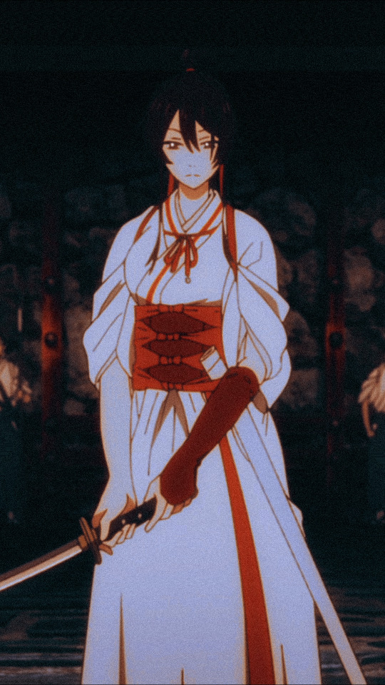
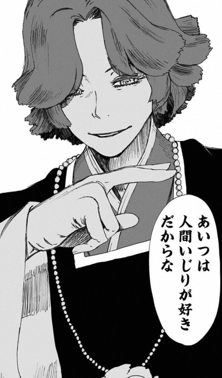
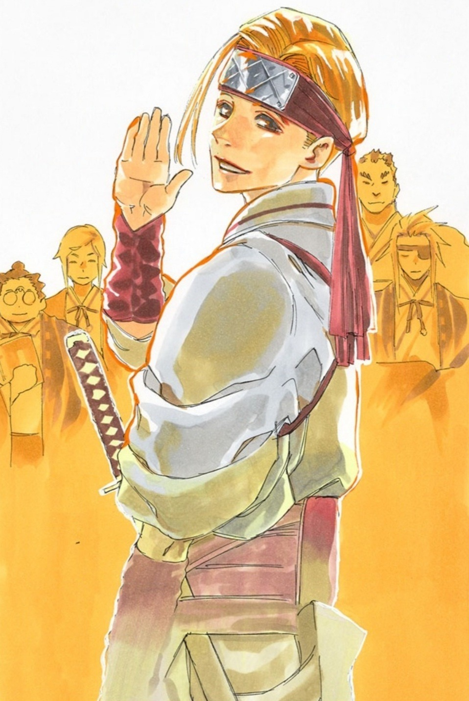
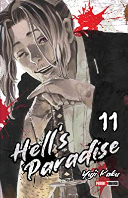
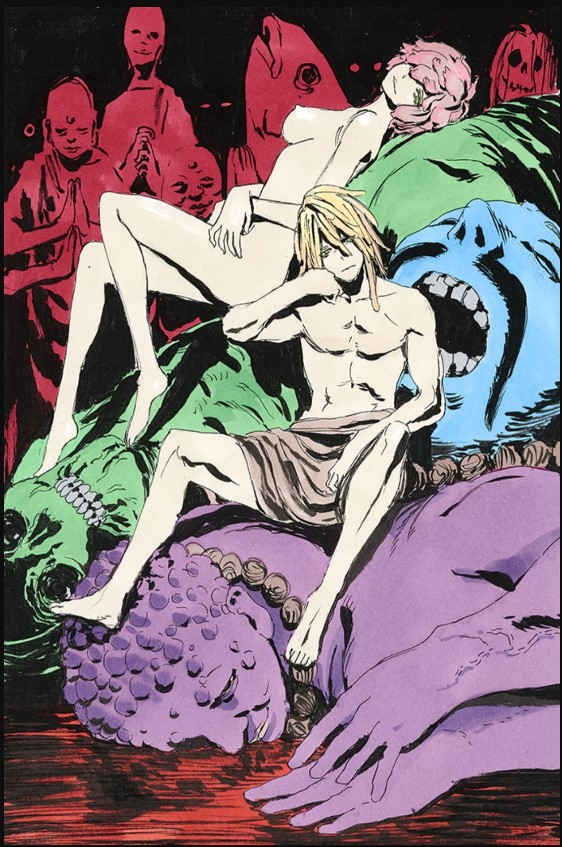

Bienvenido al Blog de Jigokuraku
En este blog encontrarás información sobre el manga y anime de Jigokuraku.
Personajes

Gabimaru, también conocido como "Gabimaru el asesino", es el protagonista principal de la historia. Es un ninja exiliado de la aldea Iwagakure, quien fue sentenciado a muerte por el shogunato debido a sus asesinatos en serie. Es un experto en artes marciales y en técnicas ninjutsu, y su objetivo es obtener la inmortalidad para así poder redimirse.
- 
Sagiri, es una joven que Gabimaru conoce en su viaje hacia la isla de la inmortalidad. Es una habilidosa kunoichi que es enviada por el shogunato para acompañar a Gabimaru en su misión. Sagiri es inteligente, astuta y una excelente luchadora, además de que su presencia en el grupo de Gabimaru agrega un toque de humor y emoción a la historia.
- 
Tensen, es el antagonista principal de la serie y el gobernante de la isla de la inmortalidad. Es un ser inmortal que se alimenta de la sangre de los humanos, lo que le otorga una gran fuerza y longevidad. Tensen tiene el control sobre los poderes de la isla, y junto con su ejército de monstruos y seguidores, se opone a Gabimaru y su grupo en su búsqueda de la inmortalidad. Es un personaje complejo con una personalidad intrigante y un gran poder.
Enemigos
- 
Tensen: Un grupo de seres divinos que gobiernan la Isla de los Condenados y que son considerados como los principales antagonistas de la serie.
- 
Purgatory: Un grupo de criminales que han sido enviados a la Isla de los Condenados para cumplir con sus condenas, pero que se han unido a Tensen y buscan escapar de la isla.
- 
Los monstruos de la Isla de los Condenados: Una gran variedad de criaturas peligrosas que habitan en la isla y que representan una amenaza constante para los personajes de la historia.